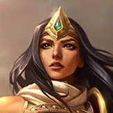

核心裝備
 嗜血者
嗜血者先補高物攻與吸血，讓希維爾能扛住 ARAM 長時間消耗。
 磁性雷射槍
磁性雷射槍7.2b 物攻提高到 30，充能輸出與暴擊能讓安全消耗更有壓力。
 多明尼克的問候
多明尼克的問候7.2b 物攻提高到 30，讓中後期處理前排的效率更好。
 那歐疾刃
那歐疾刃7.2b 降價後更快成形，普攻縮短非大絕技能冷卻，能提高彈射與法術護盾頻率。
 無盡之刃
無盡之刃後期放大暴擊傷害，把多次彈射與普攻壓力拉到最高。

Sivir · 範圍彈射／團隊加速型射手
站在前排後方用 1 技穿線消耗，2 技盡量從安全目標往敵方後排彈。3 技不要隨便交給小技能，要留給硬控或致命爆發。大絕除了追擊，也能在敵方強開時整隊拉開。
本站評級理由：1 技直線消耗與 2 技彈射在五人單線特別容易反覆命中，大絕又能整隊加速追擊／撤退；雖然官方標準 ARAM 仍有 95% 傷害修正，但 7.2b 同時強化磁性雷射槍、多明尼克並降低那歐疾刃價格，讓暴擊成形更順。
Riot 7.0a：Sivir 標準 ARAM 傷害由 85% 上調至 95%；後續至 7.2b 未見再次回調。
先補高物攻與吸血，讓希維爾能扛住 ARAM 長時間消耗。
7.2b 物攻提高到 30，充能輸出與暴擊能讓安全消耗更有壓力。
7.2b 物攻提高到 30，讓中後期處理前排的效率更好。
7.2b 降價後更快成形，普攻縮短非大絕技能冷卻，能提高彈射與法術護盾頻率。
後期放大暴擊傷害，把多次彈射與普攻壓力拉到最高。

前期物攻與吸血提高續航，適合無法回城的單線消耗。

升級三級鞋後增加生存與續航，降低被強開直接秒掉的風險。

團戰持續普攻很容易疊高攻速，能最大化 2 技彈射輸出。

前期補物攻與穿透，減少 95% 模式傷害修正造成的壓力。

先打前排時仍能維持有效傷害。

額外吸血強化長時間消耗後的回血能力。

被刺客或強開貼近時能減少第一輪爆發。

補位移、躲控制與拉開輸出距離，是射手最重要保命技能。

面對突進時多一層容錯，讓 3 技沒擋到關鍵技能時仍有救。
1 技 > 2 技 > 3 技
ARAM 開局三個基礎技能各點 1 級，之後主升 1 技、次升 2 技；大絕能點就點。
先用 1 技直線穿兵與英雄消耗，2 技從安全目標開始彈。3 技留給硬控或高傷技能，不要為了回一點魔力隨便交。
嗜血者與磁性雷射槍後續航與範圍輸出都成形。大絕可以用來配合己方前排強開，也可以在敵方突進時全隊後拉。
後期保持最大安全距離打能碰到的人。那歐疾刃讓技能循環變快，但不要因為有 3 技就站得過前；一旦法術護盾被騙掉就立刻後撤。
 致死宣告
致死宣告需要重創時替換多明尼克的問候。
 守護天使
守護天使可替換最後一件，提高關鍵團戰容錯。
 巨蛇鋒牙
巨蛇鋒牙護盾陣容明顯時可犧牲部分暴擊換破盾。
看遊戲卡片下方分類 → 點相同分類 → 看左側 S+／S／A。
二技能讓普攻可以持續彈射多人，高頻命中特效與攻速增幅很容易發揮。
一技能遠距消耗、二技能範圍輸出與大絕加速都很依賴技能循環。
標準後期出裝具暴擊率，暴擊增幅能提高持續輸出與移動能力。
攻速、射程與普攻連動能直接提高彈射輸出效率。
大絕本就提供團隊加速，額外跑速能讓希維爾更容易保持安全距離。
射程成長與持續普攻強化類英雄增幅能改善她需要靠站位輸出的弱點。
7.2b ARAM S 第五批：希維爾保留 7.0a 95% 傷害修正，並同步 7.2b 三件暴擊裝調整。
ARAM 使用獨立於召喚峽谷的資料集；本站會把官方模式平衡、單線 5v5 特性與出裝／符文適配分開判斷，而不是直接複製峽谷配置。